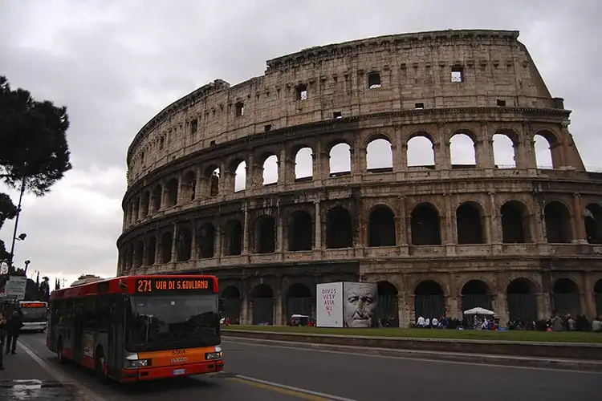

Lugares turisticos na Europa
Torre Eiffel, em Paris

Um dos monumentos mais emblemáticos e reconhecidos mundialmente, a Torre Eiffel é um dos maiores símbolos de Paris e da França como um todo. Sua história remonta ao final do século XIX, especificamente aos anos de 1887 a 1889, quando foi construída para ser a peça central da Exposição Universal de Paris, um evento que celebrava o centenário da Revolução Francesa. A torre foi objeto de críticas, debates e polêmicas ao longo do tempo. Mas resistiu, com seus 300 metros e mais de 7 mil toneladas, sendo também acompanhada por muitos admiradores. Tornou-se o que se tornou: um marco na história da arquitetura e do design por sua grandiosidade e técnica e, posteriormente, um ícone cultural.
Coliseu, em Roma
O Coliseu de Roma é um dos pontos turísticos na Europa e essencial em qualquer visita à capital italiana. De fora, nota-se que o monumento ainda se mostra capaz de permanecer em pé, resistindo às intempéries do tempo — inclusive terremotos. Do lado de dentro, você retorna ao século I d.C. e consegue imaginar todo tipo de eventos públicos que aconteciam na época, inclusive lutas de gladiadores e as ovações das massas.
Museus do Vaticano, no Vaticano

Embora seja sede da Igreja Católica e um marco religioso, o Vaticano é um dos principais pontos turísticos na Europa também por ser um local de grande importância cultural e artística. De fora, a magnífica Basílica de São Pedro, construída no século IV e reconstruída no século XVI, representa a fachada de um dos locais mais sagrados do cristianismo — de onde papas fizeram discursos com multidões de devotos atentos na praça de São Pedro ao longo dos anos — e uma obra-prima da arquitetura renascentista. Por dentro, as coleções de quadros, estátuas, os artefatos e até mesmo galerias que ostentam tanto arte como luxo — nem sempre tão equilibradamente —, impressionam.